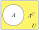

The idea of a set allows us to treat distinct objects as a single entity. For example, we could use \(S\) to represent the four seasons: spring, summer, fall, and winter. That is,
\begin{equation*}
S = \left\{\text{spring, summer, fall, winter} \right\}.
\end{equation*}
By classifying items as groups (sets), we can also investigate relationships between groups, or consider overlap between groups when counting items.
A set can be defined by describing the contents, or by listing the elements of the set, enclosed in curly brackets. Symbolically, sets are represented using capital letters and braces { } are used to enclose the sets elements. The method of listing the elements of a set in braces is called roster notation. A second method is to use set-builder notation, where braces and a vertical line | (read “such that”) is used to describe the contents of a set.
Julia, Keenan, Jae and Colin took a test. They got the following scores: 70, 95, 85 and 70. Let \(P\) be the set of test takers and \(S\) be the set of test scores. List the elements of each set using set notation.
In this example, the set of people taking the test is \(P= \{\text{Julia, Keenan, Jae, Colin}\}\text{,}\) and the set of test scores is \(S = \{70, 85, 95\}\text{.}\) Notice in this example that even though two people scored a 70 on the test, the score of 70 is only listed once.
Sometimes a collection might not contain all the elements of a set. For example, suppose Chris owns three Madonna albums. While Chris’s collection is a set, we can also say it is a subset of the larger set of all Madonna albums.
Let \(A\) and \(B\) be two sets. Then \(A\) is a subset of \(B\text{,}\) written \(A\subseteq B\text{,}\) if and only if every element of \(A\) is also an element of \(B\text{.}\)
Let \(A\) and \(B\) be two sets. We say that \(A\) is a equal to \(B\text{,}\) written \(A = B\text{,}\) if and only if \(A\subseteq B\) and \(B\subseteq A\text{.}\) That is, \(A\) and \(B\) contain the same elements.
It is possible to have a set with nothing in it. This set called the null set or empty set. It is like going to the grocery store to buy your favorite foods and realizing you left your wallet at home. You walk away with an empty bag. The set of items that you bought at the grocery store would written in set notation as \(\emptyset\text{.}\) The empty set is a subset of every set.
In applications of sets the elements that may be considered are often limited to some context or universe of discourse. This context is called the universal set and is the set containing every possible element of the described context. Every set is thus a subset of the universal set. The universal set is often labeled with a capital letter \(U\text{.}\)
When represented visually, the universal set is often illustrated by a rectangle labeled with a capital letter U. Subsets of the universal set are usually illustrated with circles for simplicity, but other shapes can be used. The visual representation of sets is further discussed in Venn Diagrams.
If you are searching for books for a research project, the universal set might be all the books in the library, and the books in the library that are relevant to your research project would be a subset of the universal set.
If you are wanting to create a group of your Facebook friends that are coworkers, the universal set would be all your Facebook friends and the group of coworkers would be a subset of the universal set.
Subsection3.1.2Set Operations: Union, Intersection, and Complement
Suppose you and your roommate decide to have a house party, and you each invite your circle, or set, of friends. When you combine your two sets of friends, you discover that you have some friends in common.
The set of friends that you have in common is called the intersection. The intersection of two sets contains only the elements that are in both sets. To be in the intersection of set \(A\) and \(B\text{,}\) an element needs to be in both set \(A\) and set \(B\text{.}\)
The intersection of two sets, \(A\) and \(B\text{,}\) denoted \(A \cap B\text{,}\) the set containing all elements that are in both \(A\) and \(B\text{.}\) That is,
\begin{equation*}
A \cap B = \{x\mid x\in A \text{ AND } x\in B \}.
\end{equation*}
The set of all friends that you and your roommate have invited is called the union. The union of two sets contains all the elements contained in either set (or both). To be in the union of set A and set \(B\text{,}\) an element must to be contained in just set \(A\text{,}\) just set \(B\text{,}\)or in the intersection of sets \(A\) and \(B\text{.}\) Notice that in this case that the “or” is inclusive.
The union of two sets, \(A\) and \(B\text{,}\) denoted \(A\cup B\text{,}\) the set containing all elements that are in \(A\) or in \(B\) (or both). That is,
\begin{equation*}
A \cup B = \{x\mid x\in A \text{ OR } x\in B \}.
\end{equation*}
What about the people who were not invited to the party and showed up anyway? They are not elements of your set of invited friends. Nor are they an element of your roommate’s set of invited friends. These uninvited party crashers are the complement to your set of invited friends. The complement of a set A contains everything that is not in the set \(A\text{.}\) To be in the complement of set \(A\text{,}\) an element cannot be in set \(A\text{,}\) but it will be an element of the universal set.
Here we are looking for all the elements that are not in set \(A\) and are in set \(C\text{:}\)\(A^C \cap C = \{\text{orange, yellow, purple}\}\text{.}\)
Venn diagrams are used to illustrate the relationships between two or more sets. To create a Venn diagram, start by drawing a rectangle to represent the universal set. Next draw and label overlapping circles to represent each of your sets. Most often there will be two or three sets illustrated in a Venn diagram. Finally, if you are given elements, fill in each region with its corresponding elements. Venn diagrams are also a great way to illustrate intersections, unions and complements of sets as shown below.
A Venn diagram is a picture used to represent sets and their relationships. Each set is represented by a circle, with the area inside the circle representing the elements that are in the set. The entire diagram is enclosed in a rectangle representing the set of all possible elements, called the universal set.
Figure3.1.17.The complement of set A includes all the elements not in A. It is the shaded region outside the set of A, but within the universal set.
Let \(A = \lbrace a, c, d, e \rbrace\) and \(B = \lbrace d, e, f \rbrace\) be subsets of the universal set \(U = \lbrace a, b, c, d, e, f \rbrace\text{.}\) Draw a Venn diagram representing these sets.
Draw a box to represent \(U\) and one circle for each of \(A\) and \(B\text{,}\) making sure that there is a region inside both circles. Then place the elements in the appropriate region as shown below.
The set \(A^C\) contains all elements not in set \(A\text{.}\) THis means that \(A^C \cap B\) contains elements that are not in \(A\)and in \(B\text{.}\) That is, it contains the elements of \(B\) that are not in \(A\) as shown in the following Venn Diagram.